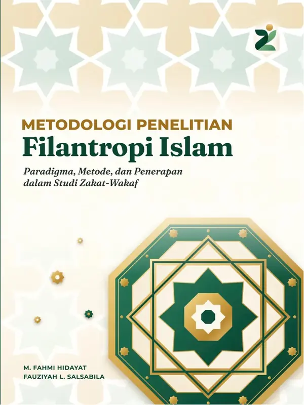
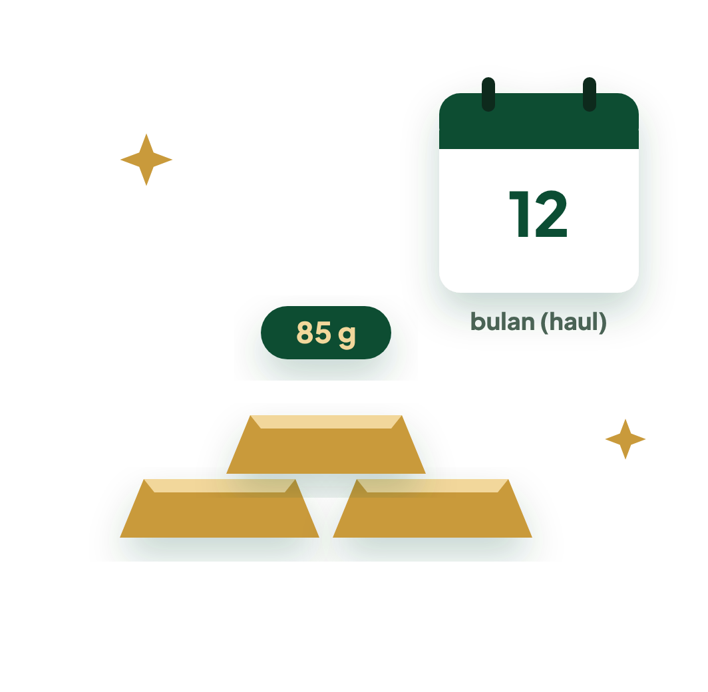
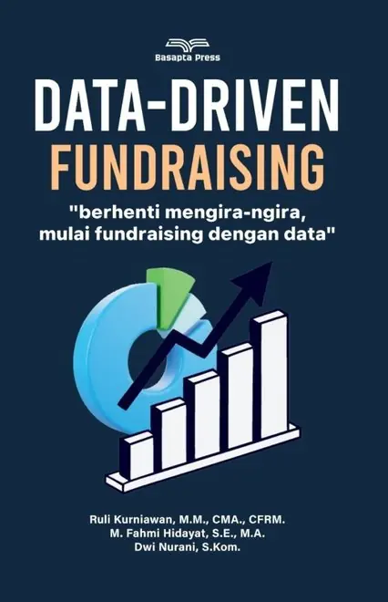
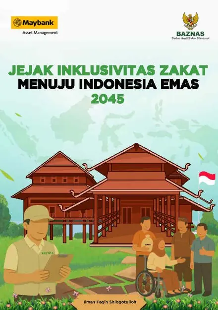
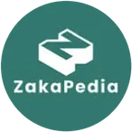
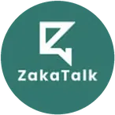
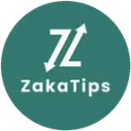
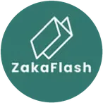
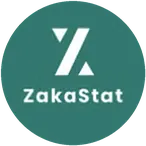

Baru · Buku digital
Metodologi Penelitian Filantropi Islam
Sepuluh bab panduan desain penelitian zakat dan wakaf, dibaca langsung di situs dengan tampilan buku. Pratinjau 24 halaman terbuka untuk semua.

Kami menemani lembaga filantropi Islam merawat setiap keputusan dengan ilmu, agar kebaikan yang dititipkan tumbuh dan sampai kepada yang berhak.
Sorotan pekan ini dari Zakademia.
Sepuluh bab panduan desain penelitian zakat dan wakaf, dibaca langsung di situs dengan tampilan buku. Pratinjau 24 halaman terbuka untuk semua.

Emas yang disimpan juga ada zakatnya. Ketentuannya dihitung dalam gram, sehingga nilai rupiahnya ikut naik turun bersama harga emas.

Uang yang tersimpan di tabungan atau deposito termasuk harta yang dizakati bila nilainya mencapai nisab dan sudah tersimpan setahun.
Dua puluh menit menjawab, langsung mendapat peta kesiapan lembaga pada enam dimensi beserta rekomendasi langkah berikutnya.
Peta ini dibuat dari data yang ada: laporan BAZNAS 2024 dan Indeks Wakaf Nasional BWI 2023. Pilih ukuran, lalu sentuh provinsi.
Sumber: BAZNAS, Laporan Pengelolaan Zakat Nasional Akhir Tahun 2024 (Tabel 2.1, 2.5, 2.6, 2.7; data per 11 Februari 2025; angka per provinsi hanya mencakup BAZNAS provinsi dan kabupaten/kota, tidak termasuk BAZNAS Pusat dan LAZ) dan BWI, Indeks Wakaf Nasional 2023. Empat provinsi hasil pemekaran Papua masih tergabung dalam Papua dan Papua Barat sesuai laporan. Batas provinsi disederhanakan.
Setiap lembaga tumbuh dengan caranya sendiri. Kami hadir di bagian yang paling Anda butuhkan.
Mendengar pertanyaan yang paling penting bagi lembaga Anda, lalu mencarikan jawabannya dengan cermat.
Seperti sosok yang berlari, riset menjaga lembaga terus bergerak maju dengan arah yang jelas.

 ZakaPedia
ZakaPediaEmas yang disimpan juga ada zakatnya. Ketentuannya dihitung dalam gram, sehingga nilai rupiahnya ikut naik turun bersama harga emas.

 ZakaTips
ZakaTipsUang yang tersimpan di tabungan atau deposito termasuk harta yang dizakati bila nilainya mencapai nisab dan sudah tersimpan setahun.
 ZakaTips
ZakaTipsPemilik usaha sering mengira zakat dihitung dari omzet. Aturannya memakai aset lancar dikurangi kewajiban jangka pendek.
Dua puluh menit menjawab, langsung mendapat peta kesiapan pada enam dimensi dan rekomendasi langkah berikutnya.
Paradigma, Metode, dan Penerapan dalam Studi Zakat-Wakaf
M. Fahmi Hidayat, Fauziyah Latiefa Salsabila
Sepuluh bab panduan memilih, memadukan, dan menerapkan desain penelitian zakat dan wakaf, dengan studi kasus, kotak Dalam Jurnal, kuis, dan kamus istilah di tepi halaman. Pratinjau 24 halaman terbuka untuk semua.

Berhenti Mengira-ngira, Mulai Fundraising dengan Data
Ruli Kurniawan, M. Fahmi Hidayat, Dwi Nurani
Lihat bukuStrategi Penanganan Stunting Berbasis Islam
M. Fahmi Hidayat, Nur Hidayah
Lihat bukuEmpat layanan berbasis penelitian untuk mendukung pengambilan keputusan lembaga filantropi Islam, dapat dipilih secara terpisah maupun terintegrasi.
Penelitian terapan yang dirancang berdasarkan kebutuhan informasi lembaga, mencakup perilaku donatur, evaluasi program, dan pemetaan potensi.
Buat SurveiPengelolaan, standardisasi, dan analisis data kelembagaan sebagai dasar pemantauan kinerja.
Analisis DataPendampingan penyusunan dan implementasi strategi kelembagaan berbasis temuan penelitian.
Mulai AsesmenPenguatan kapasitas metodologi penelitian bagi pengelola dan pemerhati filantropi Islam.
Masuk Ruang BelajarMemahami cerita lembaga dan pertanyaan yang ingin dijawab.
Menyusun cara meneliti yang sesuai dengan konteks dan nilai lembaga.
Mengolah data dengan teliti hingga menemukan makna di baliknya.
Mengubah temuan menjadi langkah dan berjalan bersama sampai manfaatnya terasa.
Enam bidang kajian yang disintesis dari penelitian tim Zakademia tentang zakat dan wakaf.
Tinjauan literatur sistematis dan studi kasus masyarakat adat
Zakat kami pandang sebagai investasi pada manusia, bukan sekadar bantuan sesaat. Kajian ini menelusuri bagaimana zakat dapat ikut memperkuat ketahanan pangan dan menangani stunting, dari tinjauan literatur hingga pengalaman masyarakat adat Bunda Tanah Melayu.
Kajian historis-regulatif dan analisis konten media sosial
Penghimpunan zakat tumbuh berlapis, bukan sekadar berpindah dari cara lama ke cara digital. Kepercayaan pada tokoh agama dan budaya setempat tetap hidup berdampingan dengan kanal kelembagaan dan digital.
Data Envelopment Analysis dan analisis indeks kinerja lembaga
Efisiensi lembaga zakat tidak lahir dari teknologi semata. Keseimbangan antara biaya dan hasil, kekuatan basis relawan, serta dukungan kelembagaan menjadi penentunya.
Tinjauan literatur sistematis dan studi lembaga wakaf digital
Kepercayaan adalah modal utama wakaf. Kajian ini memetakan apa yang membuat lembaga wakaf, termasuk wakaf digital, dapat dipertanggungjawabkan kepada wakif dan masyarakat.
Pembelajaran mesin yang dapat dijelaskan (Explainable Boosting Machine)
Data membantu lembaga mengambil keputusan yang adil dan dapat dijelaskan. Model analitik yang transparan dapat menjadi teman bagi pendamping usaha mustahik, bukan kotak hitam.
Analisis semantik Al-Qur’an dan pendekatan hermeneutika
Zakat tidak hanya mengubah kehidupan penerima, tetapi juga menenangkan pemberinya. Kajian makna sakan dalam QS At-Taubah 103 melahirkan konsep ketenangan batin muzaki.
Buku dan bab buku tim Zakademia di bidang zakat, wakaf, dan pembangunan manusia.
Paradigma, Metode, dan Penerapan dalam Studi Zakat-Wakaf
M. Fahmi Hidayat, Fauziyah Latiefa Salsabila
Panduan memilih, memadukan, dan menerapkan desain penelitian zakat dan wakaf dalam sepuluh bab, dengan studi kasus, kotak Dalam Jurnal, kuis, dan kamus istilah di tepi halaman. Pratinjau 24 halaman terbuka untuk semua.
Baca buku digitalBerhenti Mengira-ngira, Mulai Fundraising dengan Data
Ruli Kurniawan, M. Fahmi Hidayat, Dwi Nurani
Panduan bagi pengelola zakat dan fundraiser untuk beralih ke penghimpunan yang terukur: dari pengelolaan dan segmentasi data donatur hingga analisis deskriptif, diagnostik, prediktif, dan preskriptif.
Lihat bukuStrategi Penanganan Stunting Berbasis Islam
M. Fahmi Hidayat, Nur Hidayah
Mengkaji peran zakat dan lembaga zakat dalam penanganan stunting di Indonesia, serta dampaknya bagi kualitas sumber daya manusia menuju Indonesia Emas 2045.
Lihat bukuAkuntabilitas dan Transparansi dalam Optimalisasi Instrumen Fundraising
Fauziyah Latiefa Salsabila
Menelaah akuntabilitas dan transparansi dua lembaga wakaf digital di bawah perbankan syariah, termasuk akuntansi wakaf dan pengelolaan wakaf uang melalui platform digital.
Lihat buku
Bab: Membangun Manusia Melalui Zakat: Penanganan Stunting pada Masyarakat Adat Bunda Tanah Melayu
M. Fahmi Hidayat, Ilman Faqih Shibgotullah
Bunga rampai tentang zakat yang inklusif bagi pendidikan, penyandang disabilitas, masyarakat adat, dan anak-anak di daerah 3T.
Lihat bukuBab: Perbendaharaan Masa Depan: Penanganan Stunting di Bunda Tanah Melayu
Eogenie Lakilaki, Artamananda, Amaliah Sobli, Achmad Soediro, Annisa Fatihah Salsabila, M. Fahmi Hidayat, dkk.
Refleksi sembilan penulis tentang jarak antara kebijakan pendidikan dan dampaknya di ruang kelas hingga daerah terpencil.
Lihat bukuRingkasan temuan artikel jurnal tim Zakademia beserta tautan ke sumber aslinya.
Abdur Rofiq, M. Fahmi Hidayat
RUSYDIAH: Jurnal Pemikiran Islam 7(1), 35–53
Zakat juga menenangkan pemberinya. Lewat kajian makna sakan dalam QS At-Taubah 103, kajian ini menawarkan konsep ketenangan batin muzaki: zakat sebagai penyucian, pertumbuhan spiritual, dan penenang jiwa.
Lusi Emawati, M. Fahmi Hidayat, Rulli Kurniawan, Eneng Riska Rahayu Putri
Ijtimā‘iyya: Journal of Muslim Society Research 11(1), 337–350
Dari 544 unggahan Instagram BAZNAS, konten yang menghibur sekaligus mendidik paling banyak disukai dan dikomentari. Carousel mengungguli gambar tunggal dan Reels, sedangkan ajakan berinteraksi saja tidak berpengaruh nyata.
Citra Septiani, Ahmad Badrun Kosasih, M. Fahmi Hidayat
ZISWAF ASFA Journal 4(1), 17–34
Diukur dengan Indeks Zakat Nasional, Indeks Kepatuhan Syariah, dan Indeks Transparansi, BAZNAS kabupaten/kota masih tertinggal. Kuncinya: kapasitas kelembagaan, dukungan pemerintah daerah, dan kolaborasi dengan masyarakat.
Faya Rizti Khoiriyah, M. Fahmi Hidayat
Al-Iqtishad: Jurnal Ilmu Ekonomi Syariah 17(2)
Penghimpunan zakat tidak sekadar berpindah dari cara tradisional ke digital. Kepercayaan pada tokoh agama dan budaya lokal tetap berjalan berdampingan dengan kanal kelembagaan dan digital, sehingga dibutuhkan model hibrida.
Harjunadi Wicaksono, Agus Riyanto, Risanto Darmawan, M. Fahmi Hidayat, Ali Khumaidi
ILKOM Jurnal Ilmiah 17(3), 312–322
Model pembelajaran mesin yang mudah dijelaskan membantu menilai risiko pembiayaan 736 mustahik (2019–2024) dengan ROC-AUC 0,853. Sisa saldo, jenis usaha, dan pendapatan rumah tangga menjadi penentu terbesar.
M. Fahmi Hidayat, Fauziyah Latiefa Salsabila
IHTIYATH: Jurnal Manajemen Keuangan Syariah 8(1), 46–66
Tinjauan literatur sistematis tentang peran zakat dalam memperkuat ketahanan pangan dan mengentaskan stunting.
Fauziyah Latiefa Salsabila, Rini, M. Fahmi Hidayat
Journal of Sharia Economics 5(2), 174–194
Dari literatur 2014–2024, akuntabilitas lembaga wakaf bertumpu pada tiga hal: proses, kerangka kelembagaan, dan teknik pelaporan. Kerja sama pihak internal dan eksternal menjadi kunci.
Roikhan Mochamad Aziz, M. Fahmi Hidayat, Fauziyah Latiefa Salsabila
Equilibrium: Jurnal Ekonomi Syariah 11(2)
Dari empat organisasi pengelola zakat berbasis teknologi finansial, yang paling efisien justru yang kuat basis relawannya hingga desa. Efisiensi lebih ditentukan oleh keseimbangan biaya dan hasil daripada teknologi semata.
M. Fahmi Hidayat, Roikhan M. Aziz
Jurnal Ilmiah Mahasiswa Raushan Fikr 13(1)
Mengukur efisiensi empat bank umum syariah pada 2018–2021: tingkat efisiensinya berfluktuasi, dengan satu bank konsisten efisien penuh.
M. Fahmi Hidayat
UIN Sunan Kalijaga Yogyakarta
Mengukur efisiensi empat organisasi pengelola zakat berbasis teknologi finansial dengan pendekatan DEA.
Jumlah kutipan menurut Google Scholar per 11 Oktober 2026.
Prinsip metodologis dan etis yang diterapkan dalam setiap penelitian.
Temuan disampaikan apa adanya.
Setiap angka dapat ditelusuri asalnya.
Identitas dan data dilindungi dengan sungguh-sungguh.
Jalan menuju kesimpulan dapat diperiksa bersama.
Ilmu ditulis agar sampai dan bermanfaat.
Karya peneliti lain selalu kami sebut dan hargai.
Program literasi publik Zakademia disajikan melalui enam rubrik edukasi di Instagram.
Dua karakter edukatif yang menyampaikan materi zakat, infak, sedekah, wakaf, dan filantropi Islam.
Teman belajar zakat, infak, dan sedekah.
Ramah dan pendengar yang baik. Zaida menemani belajar dengan tenang, menjawab pertanyaan satu per satu sampai paham.
Menyapa dari ruang belajar Zakademia

ZakaPedia
ZakaTalk
ZakaTipsTeman belajar wakaf dan filantropi Islam.
Murah senyum dan penuh semangat. Wafiy mengajak turun ke lapangan, melihat langsung bagaimana kebaikan bekerja.
Menyapa dari lapangan

ZakaFlashZakaTipsSetiap tulisan disertai sumbernya, agar ilmu yang dibagikan dapat ditelusuri.
ZakaPediaEmas yang disimpan juga ada zakatnya. Ketentuannya dihitung dalam gram, sehingga nilai rupiahnya ikut naik turun bersama harga emas.
ZakaTipsUang yang tersimpan di tabungan atau deposito termasuk harta yang dizakati bila nilainya mencapai nisab dan sudah tersimpan setahun.
ZakaTipsPemilik usaha sering mengira zakat dihitung dari omzet. Aturannya memakai aset lancar dikurangi kewajiban jangka pendek.
 ZakaPedia
ZakaPediaBagi yang tidak mampu berpuasa dan tidak dapat menggantinya, ada fidyah. BAZNAS RI menetapkan acuan Rp65.000 per jiwa per hari untuk 2026.
 ZakaPedia
ZakaPediaZakat tidak boleh disalurkan ke sembarang orang. Al-Qur’an menyebut delapan golongan yang berhak menerimanya.
 ZakaTips
ZakaTipsBerbeda dari zakat harta lain, zakat pertanian tidak menunggu setahun. Kadarnya tergantung cara pengairan.
Kabar dan momen penting.
ZakaPediaApa artinya?Istilah dan konsep, sampai paham.
ZakaStorySiapa yang merasakan?Kisah mereka yang tumbuh lewat kebaikan.
ZakaTipsBagaimana caranya?Panduan untuk mulai berbuat.

ZakaStatBerapa besarnya?Angka yang bercerita.
ZakaTalkApa kata kamu?Ruang berbincang dan bertanya.
Zakademia lahir dari keyakinan sederhana: kebaikan akan tumbuh lebih jauh ketika dirawat dengan ilmu. Kami hadir sebagai ruang belajar dan teman berjalan bagi siapa saja yang mengelola amanah umat, agar setiap titipan kebaikan sampai, berbuah, dan mengangkat sesama.
Bertumbuh bersama, bermanfaat bagi sesama.
Setiap angka adalah manusia. Kami menjaga martabat donatur dan penerima manfaat di setiap langkah.
Pengetahuan baru bermakna ketika dapat dipahami dan dipakai bersama.
Apa yang dititipkan kepada kami, kami jaga sebaik-baiknya.
Setiap unsur lambang mewakili satu nilai kelembagaan. Pilih salah satu untuk melihat unsurnya.
Titik emas · Bermartabat
Sampaikan kebutuhan penelitian atau pendampingan lembaga Anda. Tim kami akan menindaklanjuti untuk diskusi awal.
Tab Gmail tidak terbuka, atau Anda memakai layanan email lain?
Perbarui teks, galeri foto, dan baca pesan yang masuk melalui situs.
Memeriksa akses…
Tulis kata yang ingin ditonjolkan dengan warna aksen di dalam kurung siku, misalnya Bidang [kajian.] Kosongkan kolom untuk kembali ke teks asli.
Foto tampil bergantian di bagian atas beranda. Gunakan foto mendatar (JPG, PNG, atau WebP) di bawah 20 MB.
Pesan dari formulir Mari berbincang, terbaru di atas. Hanya terlihat oleh pemilik situs.